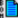
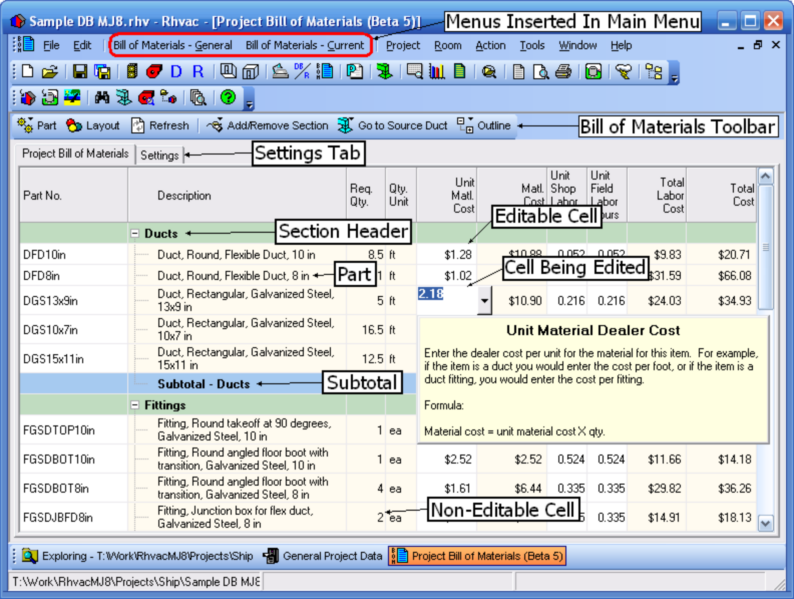

Project Bill of Materials Window Overview (Project Menu) |
  
|
Project Bill of Materials Window Overview (Project Menu) |
|
Icon:

. Keyboard Shortcut: ALT, P, MOpens the Project Bill of Materials window, where you can edit the project bill of materials for the current project.

Menus Inserted in Main Menu: When the Project Bill of Materials window is active the "Bill of Materials - General" and "Bill of Materials - Current" menus will be inserted into the program's main menu.
Bill of Materials Toolbar: This toolbar gives you quick access to the most common features.
Settings Tab: Switches to the Settings grid, where you can set certain defaults and other values for the current project.
Editable and Non-Editable Cells: Cells that are editable have a white background, while uneditable ones have a non-white background (except for non-takeoff section headers). To edit an editable cell click on it and type the new value. Click the button to the right of the cell to open its dropdown (or popup) help window. Note: Section header cells for non-takeoff sections are editable even though their background is not normally white.
Types of Rows
·Section Header: The header sections are the rows shown in pale green, above. Custom section headers are editable.
·Part: Part rows are the ones in between a section header and a subtotal. A "part" can be anything you want, not just a physical part. For example, you could enter a labor item as a "part."
·Subtotal: At the bottom of each section is a subtotal row that shows the section totals of the values in certain columns.
·Grand Total: At the bottom of the project bill of materials list is a grand total that shows the sums of all parts in all sections.
Adding Parts
·From Automatic Takeoff: When you draw ducts using graphic Manual D Ductsize, or create them with Tabular Manual D Ductsize, duct, fitting and register/grille parts are automatically added to the Project Bill of Materials.
·From Database: To add a part from the database, in the Bill of Materials toolbar click "Part | Add Part from Database," then select the part to add from the Bill of Materials Parts Database window.
·Not From Database: To add a non-database part, in the Bill of Materials toolbar click "Part | Add Non-Database Part to Section | [Section Name]." Then type in the part description and any other data you want to add.
Part Groups: You can set up part groups to let you generate different lists from the same project bill of materials. For example, you may need to give one list to one supplier, and another list of parts to another supplier.